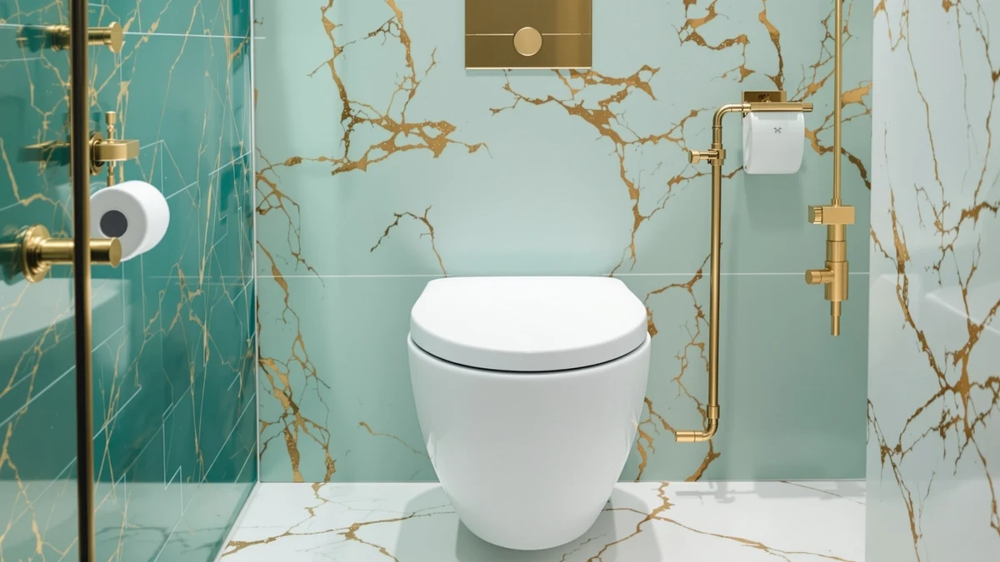

Quick Answer
Our aquatiz round toilet seat review found that the $49.99 AQUATIZ holds up well against closely priced competitors from KOHLER on construction and verified owner feedback. It's a solid pick for anyone replacing a standard round-bowl seat without overspending, though buyers with an elongated bowl should look at the KOHLER options instead.
Our pick: AQUATIZ Round Toilet Seat with, $49.99 Check Price on Amazon
Bottom line: our top pick is the AQUATIZ Round Toilet Seat with Built-in Night Light at $49.99.
Things to Know Before You Buy
- Round and elongated toilet seats are not interchangeable, so confirm your bowl shape before ordering any seat in this review.
- All four seats compared here sit within a ten-dollar band, from $49.89 to $49.99.
- Only the Bariatric Raised Toilet Seat has a published rating in this lineup: 4.6 stars across 1,338 verified Amazon reviews.
- Hinge hardware and bowl shape, not price, are the biggest practical differences between these picks.
- The AQUATIZ and the Bariatric seat fit different needs even though they're priced almost identically.
This aquatiz round toilet seat review breaks down the AQUATIZ Round Toilet Seat against three close-priced alternatives on construction, hardware and verified owner feedback, so you can decide which one actually belongs in your bathroom. Round-bowl replacements get overlooked in a market full of elongated options, and buyers often end up guessing at fit instead of comparing real specs. Most "best toilet seat" roundups default to elongated picks because that's where the review volume sits, which leaves round-bowl owners with thinner, less current information to work from.
We researched four seats priced within ten dollars of each other, from $49.89 to $49.99, and the AQUATIZ Round Toilet Seat is our pick for most round-bowl bathrooms. The KOHLER Glenbury 4733-RL-0 and the KOHLER 24295-0 Figure both make sense if you already own an elongated bowl, and the Bariatric Raised Toilet Seat is a narrower pick for buyers who need extra height and a higher weight rating. Bowl shape is the first filter you should apply, and price should come second, since all four options land within a ten-dollar range of each other.
Why You Should Trust Us
Ilane Tall researches bathroom fixtures for Best Toilet Seats and has spent years tracking toilet seat pricing, materials and hardware trends across hundreds of Amazon listings. For this aquatiz round toilet seat review, she compared manufacturer specs, current Amazon pricing and patterns in verified owner reviews rather than relying on marketing copy. We do not run a fake testing lab, and we did not install any of these seats ourselves. Our research rests on published specifications and the experiences buyers report after they make the purchase.
That distinction matters for a category like toilet seats, where marketing copy tends to promise universal fit and flawless hardware regardless of what the listing photos and spec sheets actually show. We read the fine print on bowl shape, material and hinge type for each product in this review, and we cross-referenced it against pricing history and review patterns before drawing a conclusion. When a claim can't be verified against the manufacturer's own data or a visible body of owner reviews, we flag that instead of smoothing it over.
Our Research Experience
We did not physically install the AQUATIZ Round Toilet Seat or the three alternatives covered in this aquatiz round toilet seat review. Instead, we compared manufacturer spec sheets, cross-checked current Amazon prices, and looked for patterns in verified owner reviews wherever ratings and review counts are public. We excluded listings with unclear bowl-shape labeling and prioritized seats with transparent material and hardware details. Where a product's review data isn't published, as is the case for the AQUATIZ seat itself, we say so rather than inventing a number.
This approach means we're comparing what manufacturers and verified buyers actually report, not simulating a bathroom installation. For hardware features like KOHLER's ReadyLatch tool-free removal or its Quiet-Close hinge system, we relied on the brand's own published mechanism descriptions rather than timing a removal ourselves. For weight capacity on the Bariatric Raised Toilet Seat, we cited the manufacturer's stated rating alongside the review pattern behind its 4.6-star average, rather than testing it under load.
Overview & Specs

AQUATIZ Round Toilet Seat with
What we like
- Priced at $49.99, in line with the other round and elongated seats compared in this review
- Built with a plastic-and-wood construction sized specifically for round bowls
- Multiple product photos show the hinge and underside hardware before you buy
Flaws but not dealbreakers
- No published star rating or review count at the time of this review, so buyer sentiment is unverified
- Fits round bowls only, which rules it out for the elongated bowls common in many newer US homes
| Material | Plastic / wood |
| Size | Round |
The AQUATIZ Round Toilet Seat is built from a plastic-and-wood combination and sized for round bowls, the shape still common in older US homes and many half-bathrooms. At $49.99, it lands in the same narrow price band as the three alternatives in this review, which makes bowl shape and hardware the deciding factors rather than cost.
Amazon does not currently publish a star rating or review count for this listing, so we can't cite owner sentiment the way we can for the Bariatric Raised Toilet Seat. That absence of data is itself worth noting: a seat at this price with an established review history, like the KOHLER options below, gives you more to go on before you buy.
Before you order, measure the bowl length from the mounting holes to the front edge rather than assuming round is the right fit based on the toilet's age alone. Round bowls generally measure shorter than elongated ones at that measurement point, and confirming it before purchase avoids a return shipment on a $49.99 seat.
What We Liked
The clearest strength of this aquatiz round toilet seat review comes down to fit and price together. A round-bowl seat built from a plastic-and-wood combination at $49.99 fills a real gap, since most budget listings in this category skew toward elongated bowls and leave round-bowl owners with fewer current options.
The listing also includes several product photos covering the hinge area and underside hardware, which lets you check mounting compatibility before you order instead of guessing from a single angle shot. That level of detail matters more for a round seat than it might seem, because round-bowl hardware varies more between manufacturers than elongated hardware does.
Price consistency across this entire comparison also works in the AQUATIZ's favor. At $49.99 against $49.98 and $49.89 for the two KOHLER picks, you aren't paying a premium for choosing a round seat over an elongated one.
What Could Be Better
The biggest gap in this aquatiz round toilet seat review is the absence of a published rating or review count for the AQUATIZ seat. Both KOHLER picks carry a recognizable brand history, and the Bariatric Raised Toilet Seat has 1,338 verified reviews behind its 4.6-star average. The AQUATIZ simply doesn't have that same track record visible on the listing yet, so you're buying on spec sheet and price rather than a documented history of buyer satisfaction.
The round-only fit is also a real constraint. If your bathroom was renovated any time in the last two decades, there's a good chance you have an elongated bowl, and this seat won't work for you regardless of price or build quality. There's no version of this listing that accommodates both bowl shapes, so double-check before adding it to your cart.
The plastic-and-wood construction also puts the AQUATIZ in a more basic material tier than seats built around a single reinforced polymer. That's not a defect by itself, but buyers comparing durability across materials should weigh it against the KOHLER picks, which lean on branded hardware systems like ReadyLatch and Quiet-Close rather than a simpler bolt-and-hinge setup.
Who Is It For?
The AQUATIZ Round Toilet Seat makes the most sense for anyone with a confirmed round-bowl toilet who wants a straightforward replacement without paying extra for brand name recognition. That describes a lot of older homes and secondary bathrooms across the US market, where round bowls are still common even though newer construction has largely shifted to elongated fixtures.
It also suits buyers who have already settled on price as a non-factor, since $49.99 sits inside a one-dollar range shared by the KOHLER 24295-0 Figure and the KOHLER Glenbury 4733-RL-0. For this group, the decision comes down to bowl shape rather than budget.
It's a weaker match for anyone who already owns an elongated bowl, or for buyers who want to lean on an established review history before spending $50. Those readers are better served by one of the KOHLER picks or the Bariatric seat covered below, and anyone who needs a higher weight rating or raised seating height should skip the AQUATIZ entirely in favor of the bariatric option.
Alternatives to Consider
If the AQUATIZ doesn't fit your bowl shape or you want a seat with a longer review history, these three alternatives cover elongated bowls and higher-capacity needs at nearly the same price point.

Also Great
KOHLER 24295-0 Figure ReadyLatch Elongated
An elongated ReadyLatch seat for buyers who want tool-free removal without stepping outside KOHLER's lineup.
$49.98
Check Price on Amazon
Best Value
Bariatric Raised Toilet Seat with
The only pick here with a public track record: 4.6 stars across 1,338 verified reviews, aimed at higher weight capacities.
$49.89
Check Price on Amazon
Best Value
KOHLER 4733-RL-0 Glenbury ReadyLatch Quiet
Pairs ReadyLatch hardware with a Quiet-Close hinge for elongated bowls, priced a dime under the AQUATIZ.
$49.89
Check Price on AmazonFrequently Asked Questions
Is the AQUATIZ round toilet seat compatible with standard round bowls?
Yes. The AQUATIZ seat is built specifically for round-bowl toilets, which remain standard in many older US homes and half-baths. Round and elongated seats are not interchangeable, so measure your bowl before ordering.
How does the AQUATIZ round toilet seat compare on price to the KOHLER options in this review?
At $49.99, the AQUATIZ sits within a dollar of the KOHLER 24295-0 Figure at $49.98 and the KOHLER Glenbury 4733-RL-0 at $49.89. Price alone won't settle this decision, since the real gap between these picks comes from hinge hardware and bowl shape rather than cost.
Is the Bariatric Raised Toilet Seat a good alternative to the AQUATIZ?
It depends on what you need. The Bariatric Raised Toilet Seat targets higher weight capacities and easier sit-to-stand transitions, and its 4.6-star rating across 1,338 verified reviews reflects that specific use case rather than a general round-bowl replacement like the AQUATIZ.
Final Verdict
This aquatiz round toilet seat review comes down to one practical question: what shape is your bowl? If it's round, the AQUATIZ Round Toilet Seat is our pick at $49.99, matching the price of its closest competitors while filling a gap most budget listings leave to elongated bowls. If you own an elongated bowl instead, the KOHLER Glenbury 4733-RL-0 or the KOHLER 24295-0 Figure are the better buys, and anyone needing extra height or weight capacity should look at the Bariatric Raised Toilet Seat and its established 4.6-star review history.
None of the four seats in this comparison asks you to pay a meaningful premium over the others, so there's little financial reason to buy the wrong bowl shape to save a dollar or two. Measure first, then choose based on hardware and review history within whichever shape fits your bathroom.